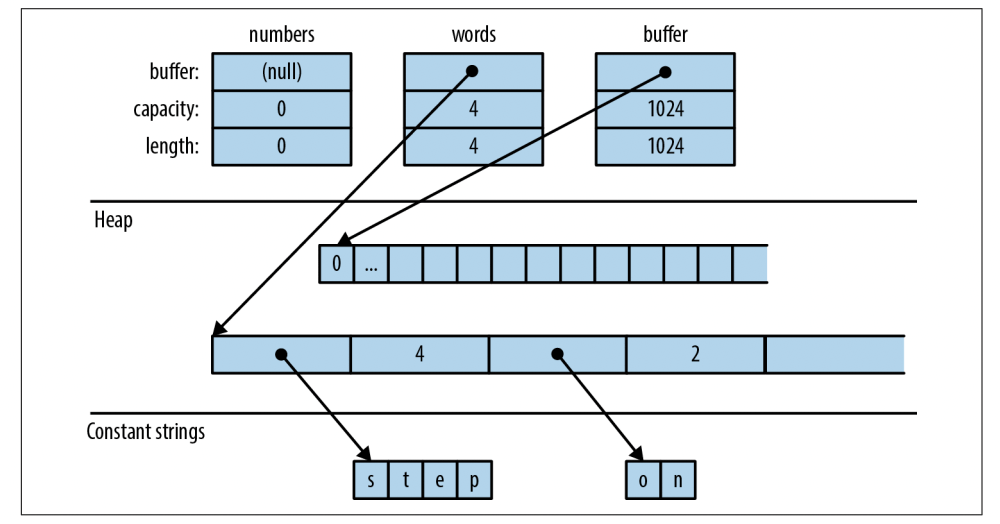
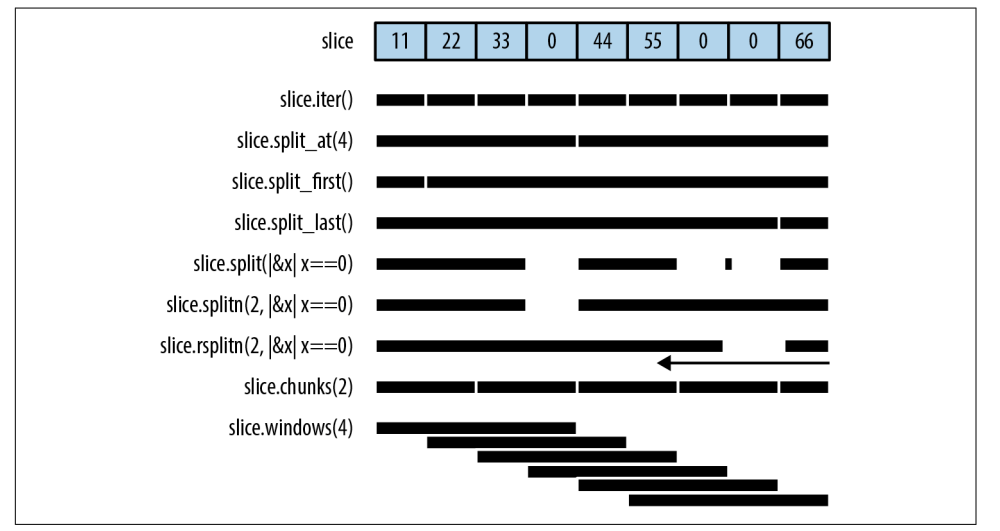
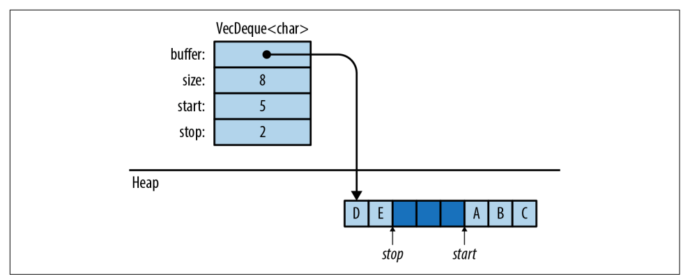
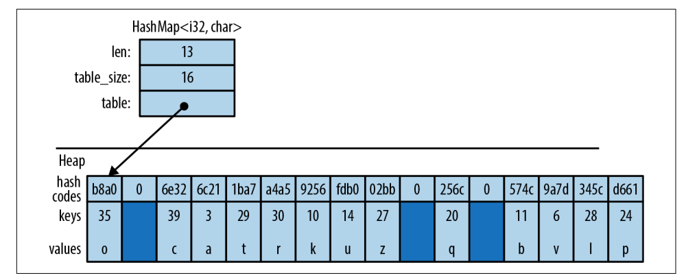
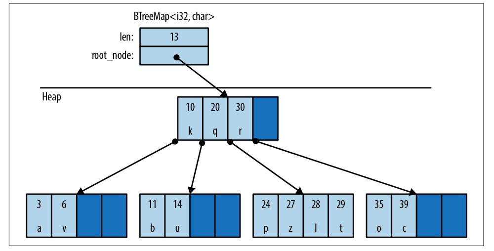

【Rust】集合类型
Rust 标准库包含几个集合，用于在内存中存储数据的泛型类型。我们已经在前面使用了集合，例如 Vec 和 HashMap。在本章中，我们将详细介绍这两种类型的方法，以及其他6个标准集合。
Rust 一共有8个标准集合类型，它们都是泛型：

-
Vec<T>：一个可增长的、堆分配的T类型值数组； -
VecDeque<T>：与Vec<T>类似，但更适合用作先进先出队列，它支持在列表的前面和后面有效地添加和删除值； -
BinaryHeap<T>：一个优先队列，BinaryHeap中的值是有组织的，所以它总是有效地找到并删除最大值； -
HashMap<K, V>：键值对表，通过键查找值很快，item以任意顺序存储； -
BTreeMap<K, V>：与HashMap<K, V>类似，但它保持entries按键排序。BTreeMap<String, i32>以字符串比较顺序存储其entries。除非需要entries保持排序，否则HashMap更快； -
HashSet<T>：一组T类型的值。添加和删除值很快，查询给定值是否在集合中也很快； -
BTreeSet<T>：与HashSet<T>类似，但它保持元素按值排序。 同样，除非需要对数据进行排序，否则HashSet更快；
Vec<T>
vector具有 3 个字段：长度、容量和指向存储元素的堆分配的指针。空 vector，容量为 0，在添加第一个元素之前，不会为其分配堆内存。和所有其他集合类型一样，Vec<T> 实现了 std::iter::FromIterator，所以我们可以通过 .collect() 方法创建，例如：
1 | let my_vec = my_set.into_iter().collect::<Vec<String>>(); |
我们再来回顾下 vector 的内存表示：
1 | // Create an empty vector |
内存表示如下图：

元素访问
最直接的访问是通过索引，如果索引越界会 panic，vector 长度和索引是 usize 类型，尝试使用 u32、u64 或 isize 作为vector索引是错误的，可以根据需要使用 n as usize 进行转换：
1 | // Get a reference to an element |
有几种方法可以轻松访问 vector 或slice的特定元素（请注意，所有slice方法也可用于数组和vector）：
-
slice.first()：返回第一个元素的引用以Option<&T>的形式，如果没有就返回None：1
2
3if let Some(item) = v.first() {
println!("We got one! {}", item);
} -
slice.last()：类似于slice.first()，但返回最后一个； -
slice.get(index)：返回第index个元素，不存在返回None：1
2
3let slice = [0, 1, 2, 3];
assert_eq!(slice.get(2), Some(&2));
assert_eq!(slice.get(4), None); -
slice.first_mut(), slice.last_mut(), slice.get_mut(index)：前面几个的变种，只是返回可变借用：1
2
3
4
5
6
7let mut slice = [0, 1, 2, 3];
{
let last = slice.last_mut().unwrap(); // type of last: &mut i32
assert_eq!(*last, 3);
*last = 100;
}
assert_eq!(slice, [0, 1, 2, 100]);因为按值返回
T意味着转移所有权，所以访问item的方法通常通过引用返回这些item。 -
slice.to_vec()：克隆整个slice，返回新的，仅仅用于可以Clone的item：1
2
3
4
5let v = [1, 2, 3, 4, 5, 6, 7, 8, 9];
assert_eq!(v.to_vec(),
vec![1, 2, 3, 4, 5, 6, 7, 8, 9]);
assert_eq!(v[0..6].to_vec(),
vec![1, 2, 3, 4, 5, 6]);
Iteration
可以通过值或者引用迭代 vector 或者 slice：
-
如果迭代
Vec<T>，将返回T，vector中的值被移除并且消费掉所有权； -
如果迭代
&[T; N]，&[T]，&Vec<T>，将返回&T，引用到单独的item，不会转移它们的所有权； -
如果迭代
&mut [T; N]，&mut [T]，&mut Vec<T>，将返回&mut T。
扩容缩容
数组，vector 或者 slice 的长度是它包含的元素的数量，例如：
-
slice.len()：slice长度，类型是usize； -
slice.is_empty()：等价于slice.len() == 0；
下面的方法用于 vector 扩缩容，不能用在数组上，它们的长度在创建的时候就确定了：
-
Vec::with_capacity(n)：创建新的能容纳n个元素的vector； -
vec.capacity()：返回vector的容量，vec.capacity() >= vec.len()； -
vec.reserve(n)：确认这里有足够的的空间再容纳n个元素，即vec.capacity() >= vec.len() + n，如果已经满足，则什么也不做，如果不够就会申请足够的空间并且将当前的内容移进去； -
vec.reserve_exact(n)：和vec.reserve(n)类似，但是不会申请额外的空间为未来的增长，也就是扩容之后vec.capacity() = exactly vec.len() + n； -
vec.shrink_to_fit()：尝试释放额外的空闲空间；
Vec<T> 有许多方法可以添加或删除元素，从而改变vector的长度。这些中的每一个都通过 mut 引用获取其自身参数。这两种方法在vector末尾添加或删除单个值：
-
vec.push(value)：将value添加到末尾； -
vec.pop()：移除和返回最后一个元素，返回类型是Option<T>，返回的是值而不是引用； -
vec.insert(index, value)：将给定的值插入到指定的index处，并且将vec[index..]往后移动，如果index > vec.len()，就会panic； -
vec.remove(index)：将给定索引处的值删除，并且将vec[index+1..]的值向左移动； -
vec.resize(new_len, value)：设置vec的新长度，如果这会增加长度，将会使用value填充增加的值，value必须实现Clone； -
vec.resize_with(new_len, closure)：像vec.resize()，但是使用闭包构造新的item，可以用于没有实现Clone的场景； -
vec.truncate(new_len)：设置vec的新长度为new_len，删除vec[new_len..]，如果vec.len() < new_len，啥也不做； -
vec.clear()：删除vec所有的元素，类似vec.truncate(0)； -
vec.extend(iterable)：将iterable中的所有item添加到vec中； -
vec.split_off(index)：类似vec.truncate(index)，但是它返回一个包含被移除值的Vec，就像多次调用pop； -
vec.append(&mut vec2)：将vec2中的所有元素移到vec中，之后，vec2就成为空的了，有点类似extend，但是extend会保留vec2； -
vec.drain(range)：移除区间内的item，并且返回移除的元素； -
vec.retain(test)：删除所有没有通过test的item，test是FnMut(&T) -> bool类型的函数； -
vec.dedup()：删除连续重复的元素，删除完之后仍然有两个s：1
2
3let mut byte_vec = b"Misssssssissippi".to_vec();
byte_vec.dedup();
assert_eq!(&byte_vec, b"Misisipi");如果要删除所有重复的
item，可以：1
2
3
4
5
6
7
8use std::collections::HashSet;
fn main() {
let mut byte_vec = b"Misssssssissippi".to_vec();
let mut seen = HashSet::new();
byte_vec.retain(|r| seen.insert(*r));
assert_eq!(&byte_vec, b"Misp");
} -
vec.dedup_by(same)：类似于vec.dedup()，但是它使用闭包函数判断是否相等，而不是==； -
vec.dedup_by_key(key)：类似于vec.dedup()，判断两个元素的想等是通过key(&mut elem1) == key(&mut elem2)，例如，如果errors是Vec<Box<dyn Error>>，你可以这样写：1
2// 删除具有重复 Messge 的 err
errors.dedup_by_key(|err| err.to_string());
Joining
下面的量方法用于元素本身是数组、slice或vector的数组、slice或vector：
-
slices.concat()：连接所有的item并且返回新的vector：1
assert_eq!([[1, 2], [3, 4], [5, 6]].concat(), vec![1, 2, 3, 4, 5, 6]);
-
slices.join(&separator)：类似于前者，但是在连接的过程中可以插入一个分割item：1
2
3
4assert_eq!(
[[1, 2], [3, 4], [5, 6]].join(&0),
vec![1, 2, 0, 3, 4, 0, 5, 6]
);
Splitting
由于 Rust 安全规则的限制，我们没法得到 vector 的多个可变引用，例如：
1 | let mut v = vec![0, 1, 2, 3]; |
如果 i == j，就会出先可变借用了同一个 item。Rust 有几种方法可以同时借用对数组、slice或向量的两个或多个部分的 mut 引用。 与前面的代码不同，这些方法是安全的，因为根据设计，它们总是将数据拆分为不重叠的区域。 其中许多方法对于使用非 mut slice也很方便，因此每种方法都有 mut 和 non-mut 版本。

这些方法都没有直接修改数组、slice或向量。 它们只是返回对内部部分数据的新引用：
slice.iter()、slice.iter_mut()
生成对每个 slice 中 item 的引用，详见。
slice.split_at(index)、slice.split_at_mut(index)
将 slice 分成一对返回，slice.split_at(index) 等价于 (&slice[..index], &slice[index..])，如果长度超出越界，就会 panic。
slice.split_first()、slice.split_first_mut()
返回 (&slice[0], &slice[1..])，slice.split_first() 返回 Option<(&T, &[T])>，如果 slice 为空返回 None。
slice.split_last()、slice.split_last_mut()
slice.split_last() 的返回类型是 Option<(&T, &[T])>。
slice.split(is_sep)、 slice.split_mut(is_sep)
将 slice 分割成一个或者多个子 slice，根据传入的 is_sep 函数后者闭包，输出至少包含一个子 slice。
slice.rsplit(is_sep)、slice.rsplit_mut(is_sep)
从右往左找 split。
slice.splitn(n, is_sep)、slice.splitn_mut(n, is_sep)
和 slice.split(is_sep) 相同，但是最多 n 个子slcie，多出来的放在最后的子 slice 中；
slice.rsplitn(n, is_sep)、slice.rsplitn_mut(n, is_sep)
和前面的类似，只是从右往左。
slice.chunks(n)、slice.chunks_mut(n)
返回长度为 n 的子 slcie，最后一个可以包含少于 n 个 item。
slice.rchunks(n)、 slice.rchunks_mut(n)
和前面的相同，只是从右往左。
slice.chunks_exact(n)、slice.chunks_exact_mut(n)
精确按照 n 进行分片，如果最后一个不足 n 个，可以通过 remainder() 访问。
slice.rchunks_exact(n)、slice.rchunks_exact_mut(n)
同上，只是从右往左。
slice.windows(n)
采用滑动窗口的方式返回子slice，例如第一个是 slice[0..n]，第二个就是 slice[1..n+1]。如果 n 大于 slice.len() 什么也不会返回，如果 n == 0，panic。
例如：
1 | fn main() { |
该代码输出：
1 2 2 3 3 4 4 5
Swapping
-
slice.swap(i, j)：交换slice[i]和slice[j]； -
slice_a.swap_slice(&mut slice_b)：将两个slice完整交换，它们必须要有相同的长度； -
vec.swap_remove(i)：删除并返回vec[i]，并且将最后一个元素填充到vec[i]；
搜索和排序
-
slice.sort()：升序排序； -
slice.sort_by(cmp)：自定义排序函数或闭包，cmp必须实现Fn(&T, &T) -> std::cmp::Ordering；1
2
3
4
5
6
7students.sort_by(|a, b| a.last_name.cmp(&b.last_name));
students.sort_by(|a, b| {
let a_key = (&a.last_name, &a.first_name);
let b_key = (&b.last_name, &b.first_name);
a_key.cmp(&b_key)
}); -
slice.sort_by_key(key)：通过自定义的闭包或者函数key升序排列，key的类型是Fn(&T) -> K where K: Ord。这个很有用当T包含一个或者多个可排序字段时：1
2// Sort by grade point average, lowest first.
students.sort_by_key(|s| s.grade_point_average());key不能返回任何元素的引用：1
students.sort_by_key(|s| &s.last_name); // error: can't infer lifetime
-
slice.reverse()：就地反转slice； -
slice.binary_search(&value)： -
slice.binary_search_by(&value, cmp)： -
slice.binary_search_by_key(&value, key)：在已排序的slice上二分查找给定值，这些方法的返回类型是Result<usize, usize>。 如果slice[index]在指定的排序顺序下等于value，则返回Ok(index)。 如果没有这样的索引，则它们返回Err(insertion_point)以便在insert_point插入值将保留顺序。 -
slice.contains(&value)：返回true如果slice有item等于value。
Slice 比较
如果类型 T 支持 == 和 != 运算符，那么 [T; N]，[T] 以及 Vec<T> 也支持，两个 slice 是相等的，如果他们的值和长度都相等；
如果类型 T 支持 < <= > >= 和 != 运算符，那么 [T; N]，[T] 以及 Vec<T> 也支持。
还有两个比较方法：
-
slice.starts_with(other)：如果slice以other为前缀，返回true。1
2assert_eq!([1, 2, 3, 4].starts_with(&[1, 2]), true);
assert_eq!([1, 2, 3, 4].starts_with(&[2, 3]), false); -
slice.starts_with(other)：如果slice以other为后缀，返回true。1
assert_eq!([1, 2, 3, 4].ends_with(&[3, 4]), true);
随机元素
-
slice.choose(&mut rng)：随即返回slice一个元素的引用，他返回Option<&T>，slice为空时返回None； -
slice.shuffle(&mut rng)：随机就地打乱slice；1
2
3
4
5
6
7
8use rand::seq::SliceRandom;
use rand::thread_rng;
fn main() {
let mut my_vec = vec![1, 2, 3, 4, 5];
my_vec.shuffle(&mut thread_rng());
println!("{:?}", my_vec);
}
VecDeque<T>
Vec 仅支持在结尾高效增删元素，而 std::collections::VecDeque<T> 是一个双端队列，支持在两端增删元素：
-
deque.push_front(value)：用于在队列前面插入值； -
deque.push_back(value)：用于在队尾插入值； -
deque.pop_front()：删除队首元素； -
deque.pop_back()：删除队尾元素； -
deque.front(), deque.back()：获取队首或者队尾元素的引用，返回值是Option<&T>； -
deque.front_mut(), deque.back_mut()类似于前者，只是返回值的可变借用Option<&mut T>；
std::collections::VecDeque<T> 的实现是一个环形 buffer，如下图所示：

与vector一样，双端队列可以按值、共享引用或 mut 引用进行迭代。 它们具有三个迭代器方法 .into_iter()、.iter() 和 .iter_mut()，它们可以以通常的方式被索引：deque[index]。
因为双端队列不会将它们的元素连续存储在内存中，所以它们不能继承slice的所有方法。 但是，如果您愿意支付转移内容的成本，VecDeque 提供了一种可以解决此问题的方法：
-
deque.make_contiguous()：将队列整理成连续内存的形式，返回&mut [T]； -
Vec::from(deque)：Vec实现了From<VecDeque<T>>，这将队列转换成Vec； -
VecDeque::from(vec)：VecDeque实现了From<Vec<T>>，将vector转换成队列，这也是O(n)，但它通常很快，即使向量很大，因为向量的堆内存可以简单地移动到新的双端队列；这使得从已有vector创建队列很方便：1
2use std::collections::VecDeque;
let v = VecDeque::from(vec![1, 2, 3, 4]);
BinaryHeap<T>
std::collections::BinaryHeap 是一个二叉堆实现的大顶堆，它只实现了 Vec 的某些方法，例如：BinaryHeap::new()，.len()，.is_empty()，.capacity()，.clear()和
.append(&mut heap2)，下面是它独有的一些方法。
-
heap.push(value)：增加元素到堆； -
heap.pop()：删除并且返回堆中的最大值，返回值是Option<T>，如果堆是空的； -
heap.peek()：返回最大值的引用，返回类型是Option<&T>； -
heap.peek_mut()：返回类型是PeekMut<T>，它代表了堆中最大值的可变引用，并且提供了一个类型关联方法pop()以从堆中弹出数据。用这个方法，我们可以基于最大值判断是否要从堆中弹出数据：1
2
3
4
5
6use std::collections::binary_heap::PeekMut;
if let Some(top) = heap.peek_mut() {
if *top > 10 {
PeekMut::pop(top);
}
}
BinaryHeap 是可迭代的，它有一个 .iter() 方法，但迭代器以任意顺序产生堆的元素，而不是从大到小。要按优先级顺序使用 BinaryHeap 中的值，请使用 while 循环：
1 | while let Some(task) = heap.pop() { |
HashMap<K, V>、BTreeMap<K, V>
map 是键值对的集合，叫做 entries，map 中可以高效地通过 key 查找，不存在两个不同的 entries 有相同的 key。Rust 有两种 map 的实现，HashMap<K, V> 和 BTreeMap<K, V>，它们两个有相同的方法，不同的地方在于两者如何保持entries排列以进行快速查找。
HashMap 存储键值在hash表中，所以要求键的类型必须实现 Hash 和 Eq，下图展示了它在内存中的表示，深色区域是未使用的。所有键、值和缓存的哈希码都存储在单个堆分配表中。 添加entries最终会迫使 HashMap 分配一个更大的表并将所有数据移入其中。

BTreeMap 将entries按键顺序存储在树结构中，因此它需要一个实现 Ord 的键类型 K。 下图显示了一个 BTreeMap。 同样，较暗的区域是未使用的备用容量。

BTreeMap 将其entries存储在节点中。BTreeMap 中的大多数节点只包含键值对。非叶节点，如该图所示的根节点，也为指向子节点的指针留有空间。 (20, 'q') 和 (30, 'r') 之间的指针指向包含 20 到 30 之间的键的子节点。添加entries通常需要将节点的一些现有entries向右滑动，以保持它们的排序，有时还涉及分配新节点。
Rust 标准库使用 BTree 而不是平衡二叉树，因为 BTree 在现代硬件上更快。 与 BTree 相比，二叉树每次搜索使用的比较次数可能更少，但搜索 BTree 具有更好的局部性——也就是说，内存访问被分组在一起，而不是分散在整个堆中，这会提高内存缓存的命中率，这是一个显着的速度提升。
创建 map
-
HashMap::new()、BTreeMap::new()：创建空的map； -
iter.collect()：可以从一个Iterator<Item=(K, V)>创建新的HashMap或者BTreeMap； -
HashMap::with_capacity(n)：创建空的map至少能存储n个entries，由于它们存储entries在一个整个的堆内存中，所以他们有容量及相关的方法hash_map.capacity()，hash_map.reserve(additional)和hash_map.shrink_to_fit()，BTreeMaps没有这些。
键值处理
-
map.len()：返回entries的数量； -
map.is_empty()：如果map没有entries返回true； -
map.contains_key(&key)：返回true如果map包含指定key； -
map.get(&key)：在map中搜索指定key。如果找到，返回Some(r)，r是一个指向对应值的引用。否则，返回None； -
map.get_mut(&key)：类似于map.get(&key)，但是返回指定值的可变引用。一般来说，map允许对存储在其中的值进行mut访问，但不能访问键。 这些值是可以随意修改的。键属于map本身；它需要确保它们不会改变，因为entries是按它们的键组织的。就地修改key将是一个错误； -
map.insert(key, value)：插入或者更新一个(key, entry)到map中，如果存在旧值返回； -
map.extend(iterable)：迭代iterable将得到(K, V)插入到map中； -
map.append(&mut map2)：将map2的所有entries移动到map中； -
map.remove(&key)：找到并且删除指定key，如果存在返回删除对应key的值，返回类型是Option<V>； -
map.remove_entry(&key)：找到并且删除指定key，如果存在返回删除对应键值对，返回类型是Option<K, V>； -
map.retain(test)：删除所有未通过test函数的键值对，test的类型是FnMut(&K, &mut V) -> bool。对于map的每个元素都会调用test(&key, &mut value)，如果返回false，这个key就会从map中删除；不考虑性能，就像这样写：1
map = map.into_iter().filter(test).collect();
-
map.clear()：删除所有键值对；
一个 map 也可以通过 map[&key] 这种形式查询，map 实现了内建的 std::ops::Index。但是如果给定的 key 不存在，就会 panic，这就像数组越界访问。
对于 .contains_key()，.get()，.get_mut()，.remove() 中的 key，没必要是精确的 &T 类型，这些方法是泛型，它们可以从 K 借用。所以，在 HashMap<String, Fish> 中这样调用 fish_map.contains_key("conger") 是没有问题的，即使 "conger" 不是 String 类型，但是它实现了 Borrow<&str>。
由于 BTreeMap<K, V> 按 key顺序存储，所以支持额外的操作：
btree_map.split_off(&key)：将btree_map一分为二，键小于key的entries留在btree_map中，返回包含其他entries的新BTreeMap<K, V>；
Entry
HashMap 和 BTreeMap 都有对应的 std::collections::hash_map::Entry 或者 std::collections::btree_map::Entry 类型，Entry 的重点是消除冗余的映射查找，例如，这里有一些获取或创建学生记录的代码：
1 | // Do we already have a record for this student? |
这可以完成工作，但是访问了 student_map 两三次，每次都要查找，其实我们要的只是有这个 key 更新没有的话插入。entries的想法是我们只进行一次查找，生成一个entries值，然后用于所有后续操作。这个单行代码等效于前面的所有代码，只是它只进行一次查找：
1 | let record = student_map.entry(name.to_string()).or_insert_with(Student::new); |
student_map.entry(name.to_string()) 返回的 Entry 就像对 map 中某个位置的可变引用，该位置要么被键值对占用，要么空置，这意味着那里还没有Entry。如果为空，则 Entry的 .or_insert_with() 方法会插入一个新记录。
所有的 Entry 都是使用相同的方法创建的：
-
map.entry(key)：返回给定键的Entry，如果map中没有这样的键，则返回一个空Entry。此方法通过mut引用获取其self参数并返回具有匹配生命周期的Entry：1
pub fn entry<'a>(&'a mut self, key: K) -> Entry<'a, K, V>
Entry类型有一个生命周期参数'a，因为它实际上是一种对map的mut引用，只要Entry存在，它就拥有对map的独占访问权。1
2
3
4pub enum Entry<'a, K: 'a, V: 'a> {
Occupied(OccupiedEntry<'a, K, V>),
Vacant(VacantEntry<'a, K, V>),
}不幸的是，如果
map具有String键，则无法将&str类型的引用传递给此方法。在这种情况下，.entry()方法需要一个真正的字符串。
Entry 提供了三种处理空条目的方法：
-
map.entry(key).or_insert(value)：确保map包含具有给定键的条目，如果需要，插入具有给定值的新条目。它返回对新值或现有值的mut引用。假设我们需要统计投票，可以这样写：1
2
3
4
5
6
7
8
9
10use std::collections::HashMap;
fn main() {
let ballots = vec![];
let mut vote_counts: HashMap<String, usize> = HashMap::new();
for name in ballots {
let count = vote_counts.entry(name).or_insert(0);
*count += 1;
}
} -
map.entry(key).or_default()：确保map包含具有给定键的条目，如果需要，插入具有Default::default()返回的值的新条目。这仅适用于实现Default的类型。与or_insert一样，此方法返回对新值或现有值的mut引用； -
map.entry(key).or_insert_with(default_fn)：和前两个方法相同，只是它调用default_fn()生成默认值。如果已经存在，default_fn是不会调用的；假设我们想知道哪些单词出现在哪些文件中。 我们可以写：1
2
3
4
5
6
7let mut word_occurrence: HashMap<String, HashSet<String>> = HashMap::new();
for file in files {
for word in read_words(file)? {
let set = word_occurrence.entry(word).or_insert_with(HashSet::new);
set.insert(file.clone());
}
} -
map.entry(key).and_modify(closure)：如果指定key的Entry已经存在，将调用闭包并且传入Entry的可变借用，然后将Entry返回，所以它可以和其他方法串联起来使用；1
2
3
4
5
6
7
8
9// This map contains all the words in a given string,
// along with the number of times they occur.
let mut word_frequency: HashMap<&str, u32> = HashMap::new();
for c in text.split_whitespace() {
word_frequency
.entry(c)
.and_modify(|count| *count += 1)
.or_insert(1);
}
Entry 是枚举类型，例如，HashMap 中的：
1 | // (in std::collections::hash_map) |
迭代 Map
这里还有几个迭代 map 的方法：
-
通过值迭代，
for (k, v) in map产生(K，V)对，这将消费map； -
通过引用迭代，
for (k, v) in &map产生(&K, &V)对； -
通过可变引用迭代，
for (k, v) in &mut map产生(&K, &mutV)对；
而 .iter() 和 .iter_mut() 就像按 &map 和 &mut map 迭代。除此之外，还有：
-
map.keys()：返回一个所有key引用的迭代器； -
map.values()：返回一个所有value引用的迭代器； -
map.values_mut()：返回一个所有value可变引用的迭代器；
HashSet<T>、BTreeSet<T>
集合中的值都是唯一的，Map 和 Set 有不同的方法，但在实现上，Set 就像只有键的映射，而不是键值对。 事实上，Rust 的两种集合类型 HashSet<T> 和 BTreeSet<T> 被实现为 HashMap<T, ()> 和 BTreeMap<T, ()>。
这里有一些集合常用的方法：
-
HashSet::new()、BTreeSet::new()：创建新的集合； -
iter.collect()：可以用于从迭代器创建一个集合，如果迭代器产生重复值，将会被自动丢弃； -
HashSet::with_capacity(n)：创建至少能容纳n个值的集合； -
set.len()：返回集合中值的数量； -
set.is_empty()：返回true当集合为空时； -
set.contains(&value)：当集合包含value是返回true； -
set.insert(value)：插入集合新的值，返回true如果值被添加，如果已经存在返回false； -
set.remove(&value)：从集合中删除值，删除成功则返回true，如果之前不存在则返回false； -
set.retain(test)：删除所有没通过测试的值，test的类型是FnMut(&T) -> bool，对于集合的每个元素，将调用test(&value)，如果返回false，这个值就会被移除；
迭代
有两种迭代集合的方式：
-
按值迭代，
for v in set返回集合的成员； -
按共享引用迭代，
for v in &set返回集合值的引用；
通过可变引用迭代集合是不支持的，这里没有方法获取集合中值的可变引用，而 set.iter() 返回一个迭代器包含集合中值的引用。
HashSet 迭代器，就像 HashMap 迭代器，以任意顺序获取它们的值，而 BTreeSet 迭代器产生的值是有序的。
某些方法
-
set.get(&value)：返回Option<&T>，等于value的集合中成员的引用； -
set.take(&value)：像set.remove(&value)，但是他返回移除的值； -
set.replace(value)：就像set.insert(value)，但是如果集合已经包含这个值，这个会返回并替换旧的值，返回类型是Option<T>；
集合操作
-
set1.intersection(&set2)：返回两个集合之间的交集； -
set1.union(&set2)：求集合之间的并集； -
set1.difference(&set2)：求集合之间的差集； -
set1.symmetric_difference(&set2)：返回只存在其中一个集合中的值的新集合；1
2
3
4
5
6
7
8
9
10
11
12
13
14use std::collections::HashSet;
let a = HashSet::from([1, 2, 3]);
let b = HashSet::from([4, 2, 3, 4]);
// Print 1, 4 in arbitrary order.
for x in a.symmetric_difference(&b) {
println!("{}", x);
}
let diff1: HashSet<_> = a.symmetric_difference(&b).collect();
let diff2: HashSet<_> = b.symmetric_difference(&a).collect();
assert_eq!(diff1, diff2);
assert_eq!(diff1, [1, 4].iter().collect()); -
set1.is_disjoint(set2)：如果self与other没有共同的元素，则返回true； -
set1.is_subset(set2)：如果set1是set2的子集，将返回true； -
set1.is_superset(set2)：如果set1是set2的超集，将返回true；
Hashing
std::hash::Hash 是标准库中所有可 hash 类型必须实现的，HashMap 的键和 HashSet 的元素都必须实现 Hash 和 Eq。
大对数内部实现了 Eq 的类型也都实现了 Hash，整数，字符和 String 都是可 hash 的，以及 tuple，array，slice 和 vector，只要他们的元素时可 hash 的。
标准库的一个原则是一个值不管存在哪里或者你如何引用，它们都有相同的hash值。因此，一个值和它的引用有相同的hash值，Box<T> 也和它包含的值有相同的 hash 值，一个 vector 和包含相同的数据的slice有同样的hash值。一个字符串和包含相同字符的 &str 有相同的hash值。
结构体和枚举默认没有实现 Hash，但是可以自动派生，只有所有元素可 hash：
1 |
|
如果你为一个类型手动实现 PartialEq，你也应该手动实现 Hash。
自定义 Hash 算法
hash 方法是通用的，因此前面显示的 Hash 实现可以将数据提供给任何实现 Hasher 的类型，这就是 Rust 支持可插入哈希算法的方式。
std::hash::BuildHasher 是表示散列算法初始状态的类型的特征。每个 Hasher 都是一次性使用的，就像一个迭代器：你使用一次就扔掉它，BuildHasher 是可重用的。
每个 HashMap 都包含一个 BuildHasher，每次需要计算哈希码时都会使用它。BuildHasher 值包含哈希算法每次运行时所需的键、初始状态或其他参数。完整计算一个 hash 值如下所示：
1 | use std::hash::{Hash, Hasher, BuildHasher}; |
HashMap 每次在需要计算 hash 值的时候会调用这三个方法，所有方法都是可以内联的，所以非常快。
Rust 的默认哈希算法是 SipHash-1-3，SipHash 速度很快，并且非常擅长最小化哈希冲突。事实上，它是一种密码算法：没有已知的有效方法来生成 SipHash-1-3 冲突。 只要为每个哈希表使用不同的、不可预测的密钥，Rust 就可以抵御一种称为 HashDoS 的拒绝服务攻击，在这种攻击中，攻击者故意使用哈希冲突来触发服务器中最坏情况的性能。
但也许您的应用程序不需要它，如果要存储许多小密钥，例如整数或非常短的字符串，则可以实现更快的哈希函数，但会牺牲 HashDoS 安全性。 fnv 实现了一种这样的算法，即 FNV 哈希，要尝试它，请将此行添加到您的 Cargo.toml：
1 | [dependencies] |
然后导入使用：
1 | use fnv::{FnvHashMap, FnvHashSet}; |